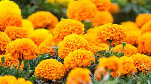
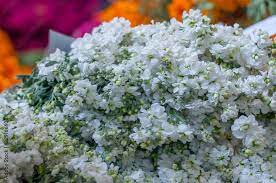
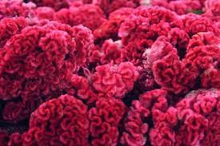

Recuerdos, calaveras, flores y colores nos unen el 1 y 2 de noviembre gracias
a una de las tradiciones más representativas de México, el Día de Muertos.
En nuestro país, esta celebración es muy colorida porque se realizan altares
decorados y se colocan ofrendas,flores, pan de muerto, papel picado, incienso,
fotografías, velas y música. En honor a los fieles difuntos.
En este día queremos conmemorar las flores, un símbolo de felicidad, amor,
alegría y larga vida. La función en esta tradición es decorar, aromatizar el momento
y dar color a esta celebración.¿Conoces de las flores típicas del Día de Muertos?,
en este artículo te enseñaremos cuál es el significado y eluso que se les da.
|
Es la flor más conocida en esta época, originaria de México,su nombre proviene del náhuatl Cempoalxochitl que significa las “veinte flores”. En los altares se utiliza principalmente para crear senderos y guiar a nuestros seres queridos a los altares Un dato interesante es que el estado de Puebla ocupa el primer lugar en su producción. |
 |
|  |
También conocida como velo de novia, dicha flor es de color blanco. En los altares simboliza pureza y amor eterno. Se cultiva principalmente en los estados de Puebla y San Luis Potosí. |
|
Otra flor representativa de esta fecha. Es colorida y se utiliza para decorar y honrar en la ofrenda en el altar. Esta flor crece una vez al año y se puede encontrar en Puebla, Guerrero, Guanajuato, Morelos y la Ciudad de México. Un dato curioso es que es comestible y tiene propiedades depurativas, astringentes y antibacteriana |
 |